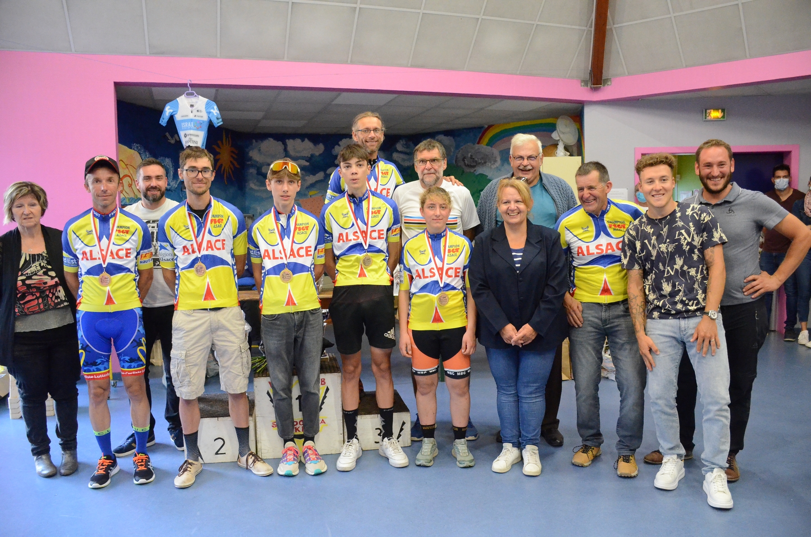
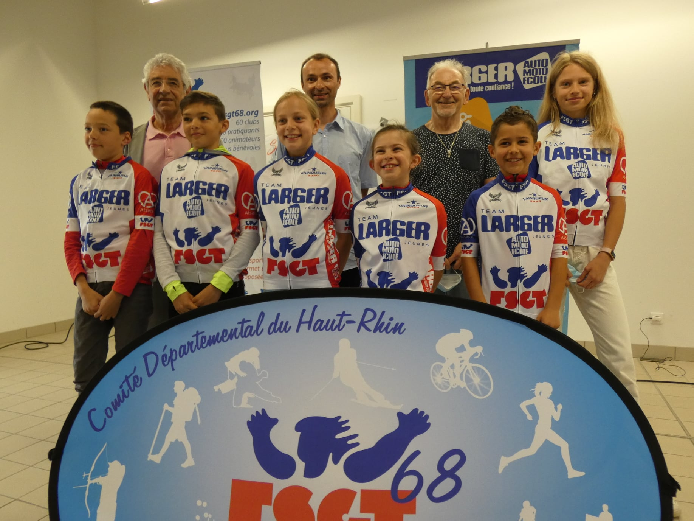
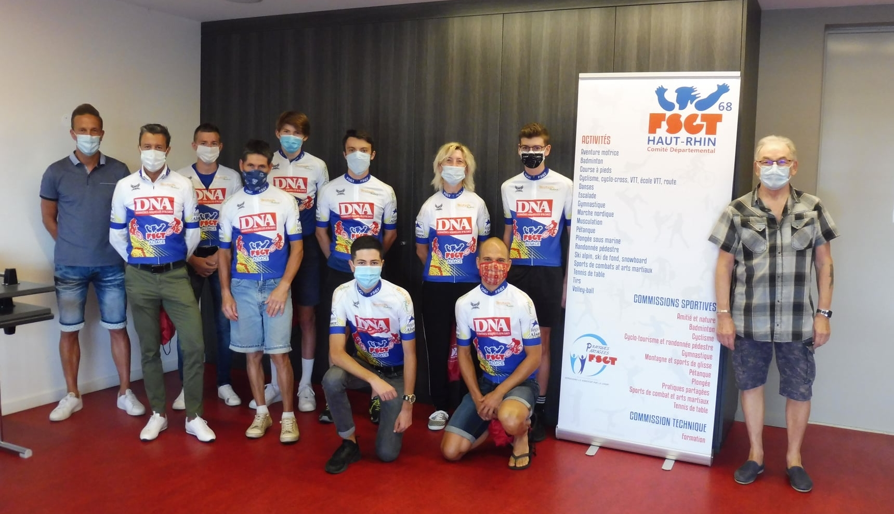

Championnat d'Alsace FSGT Route 2021
Les champion(ne)s titré(e)s à Seppois-le-Bas :

Commission mixte FFC/FSGT 2021 :
dernier compte-rendu consultable ici
Consignes sanitaires pour les activités cyclistes :
à lire ici
Remises des prix du Trophée "Team Larger Jeunes"

Remises des trophées Rector'Cup & DNA

L'album photos complet de la
remise du trophée DNA est
ici,
celui de la remise du trophée
Rector'Cup est
là.